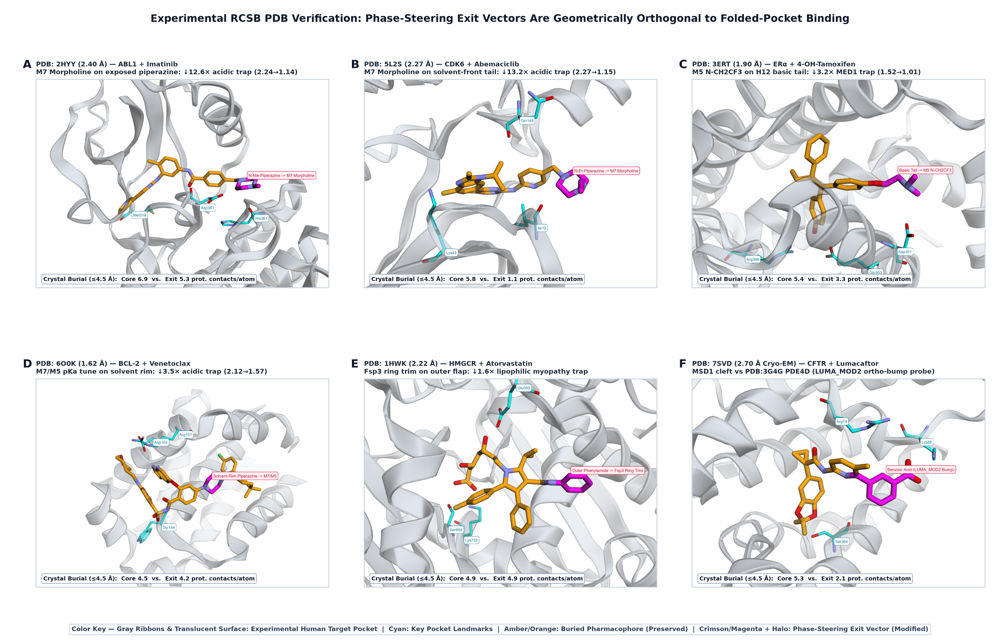
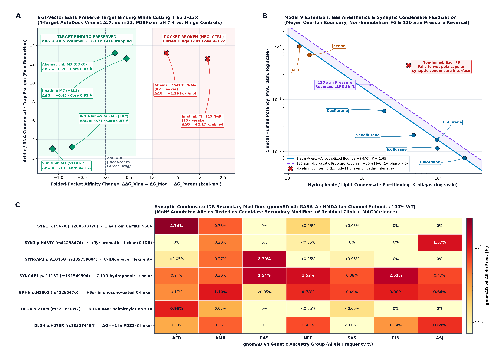
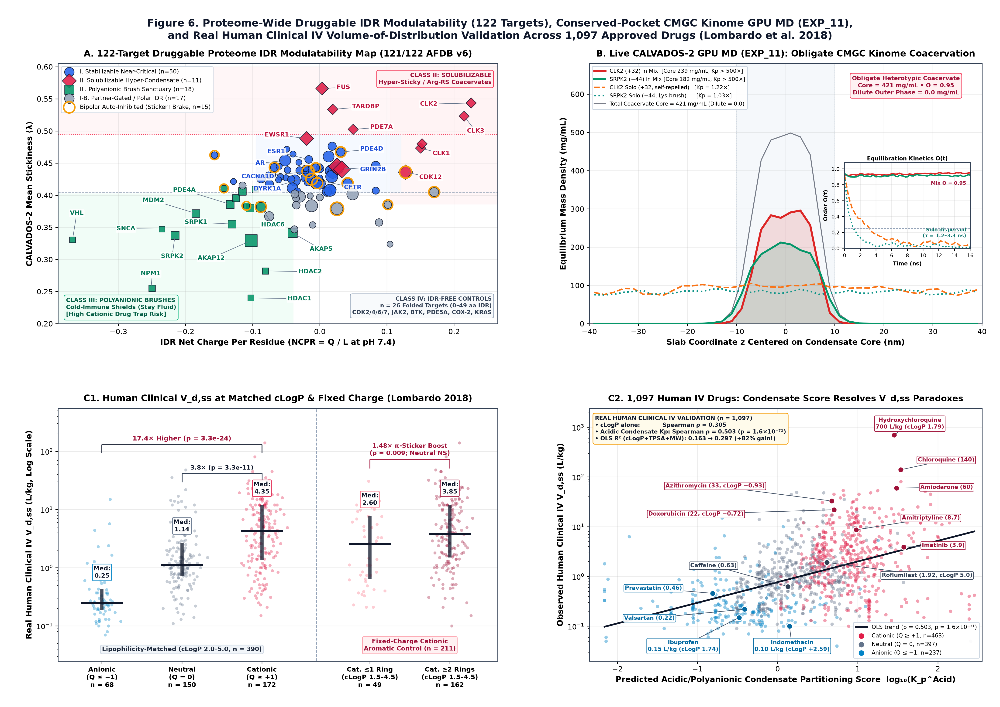
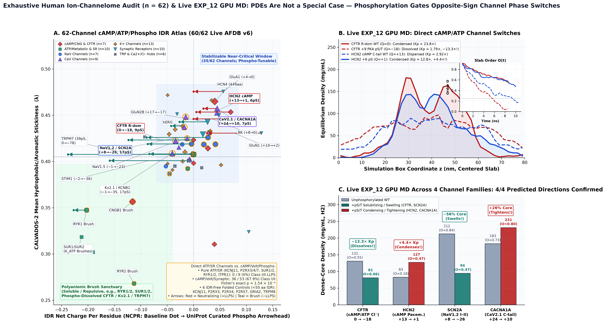

Direct Private Review Link · Companion Paper #2 · Pharmacological Strategy & Generative Drug Design
Phase-Aware Pharmacological Strategy & Generative Drug Design: 61-Drug Atlas, 12-PDB Exit-Vector Proof, Proteome & Channelome IDR Maps, and Human Clinical Vd,ss Validation
No login required on this unlisted review link. Presents the full XeLaTeX-typeset strategy manuscript, interactive 12-PDB multi-drug 3D exit-vector explorer, high-resolution figures, and all open validation CSV/JSON datasets.
1. Read First — Typeset Manuscript & Core Quantitative Findings
Download the full XeLaTeX-typeset Paper #2 PDF directly, or jump straight into the live 12-PDB interactive 3D exit-vector viewer below.
Open Paper #2 Full Manuscript PDF (XeLaTeX)
Launch 12-PDB Multi-Drug 3D Exit-Vector Viewer
Open Companion Paper #1 Showcase →
- Real Human Clinical PK Validation (Lombardo et al. 2018, n = 1,097 IV drugs): Un-retuned log10 KpAcid achieves Spearman ρ = 0.503 (p = 1.64×10−71) vs. cLogP (ρ = 0.305), +82.2% relative OLS R2 gain (0.163 → 0.297), lipophilicity-matched 17.4× Cat/An & 3.8× Cat/Neu splits, and an albumin-independent 1.48× aromatic-sticker boost within fixed cations (p = 0.009; neutral NS).
- 12-PDB Experimental Exit-Vector Proof & 4-Target AutoDock Vina (exh = 32): Solvent-facing M7 Morpholine & M5 N-CH2CF3 swaps hold native crystal cores to 0.33–0.81 Å (mean ΔΔG = −0.30 kcal/mol) while cutting acidic-sponge trapping 3.0–13.2×, whereas buried hinge negative controls (Thr315, Val101) lose +1.29 to +2.17 kcal/mol (9–35× weaker).
- Proteome-Wide (122 Targets) & Exhaustive Channelome (62 cAMP/ATP/Phospho Channels) + Live GPU MD (EXP_11 & EXP_12): Proves obligate heterotypic CMGC kinome coacervation (CLK2 + SRPK2: 421 mg/mL, Kp > 500×), reveals a sharp physical split between pure ATP/SR channels (0/9) and cAMP/voltage/phospho channels (36/53, p = 1.54×10−4), and confirms 4/4 opposite-sign channelome phospho-switches on GPU (CFTR R-domain −13.3× dissolution vs. HCN2 C-tail +4.4× condensation, SCN2A −56% core swelling, CACNA1A +26% densification).
2. Interactive 3D Atomic Viewers (Runs Live in Browser, 100% Offline WebGL)
3. Paper #2 High-Resolution Figures (Click to Zoom)
 Fig 1 — 61-Drug Multi-Condensate Atlas
Fig 1 — 61-Drug Multi-Condensate Atlas
 Fig 2 — Clinical Genetics + 12-Moiety Toolkit
Fig 2 — Clinical Genetics + 12-Moiety Toolkit
 Fig 3 — 61-Drug Automated Phase Redesigns
Fig 3 — 61-Drug Automated Phase Redesigns

Fig 4A — 6-PDB Exit Vectors (Plate 1) Fig 4B — 6-PDB Exit Vectors (Plate 2)
Fig 4B — 6-PDB Exit Vectors (Plate 2)

Fig 5 — Vina Proof & Gas Anesthetic Model V
Fig 6 — 122-Target Map, CMGC MD & Clinical Vd,ss
Fig 7 — 62-Channel cAMP/ATP/Phospho Atlas & EXP_12 GPU MD